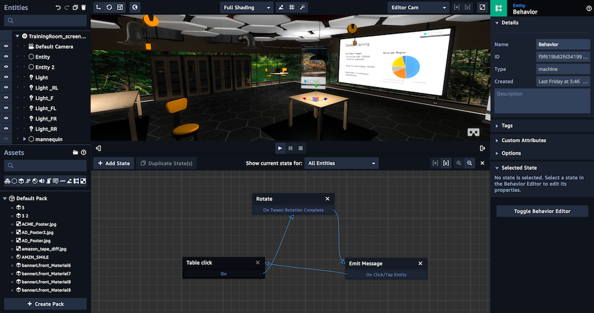
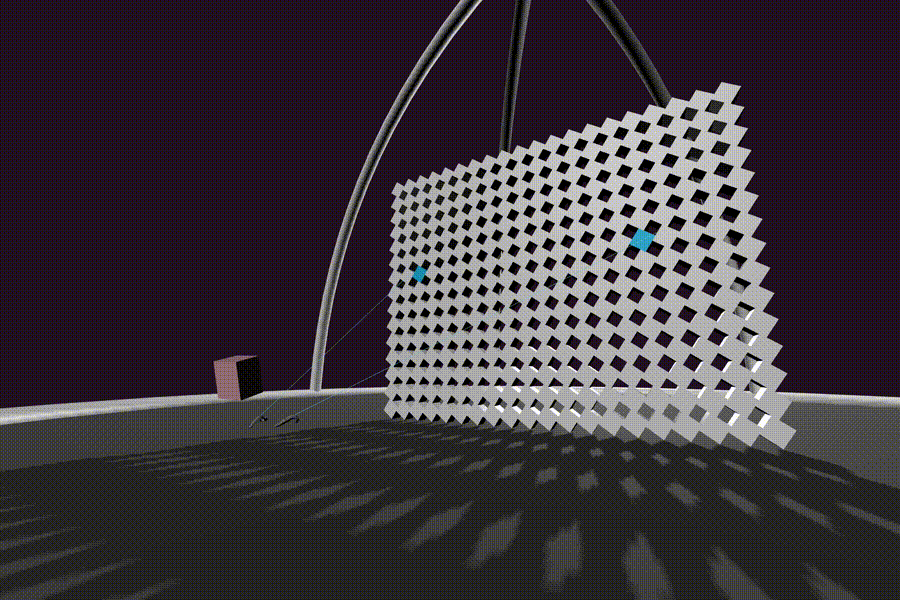

:The Immersive Web
on the Web??
brings Web Powers to XR.
- This browser is able to display WebGL worlds in an immersive fashion.
- One of my main focuses as a developer advocate is on VR
- and that is what I am here to talk to you about today!
- So what is XR?
- it's an umbrella term for AR and VR
- Why do we group them together? Similar problems.
- AR -> Brings the world to your environment.
- VR -> Brings you to the world
- If Immersive Headsets are the Future of Devices then the web needs to be there to stay relevant.
- Right now they have an issue with distribution of content, silo'd large downloads, device specific, hangs around.
- Bringing XR powers to the Web. Also brings Web Powers to XR.
Works today.
https://www.goodboydigital.com/case-study/doctor-who-time-vortex-360o
Amazon Sumerian
| Headsets | Handsets | |
| VR | GearVR, Oculus Rift, HTC Vive, Oculus GO, etc | Mobile Phone Magic Window Mode |
| AR | Hololens, Magic Leap | Mobile Phone AR, i.e. Pokemon Go |

XR Input
https://github.com/immersive-web/webxr-polyfill
The Future
- Expands to Headset VR/AR and Handset VR/AR
- Magic Window behaviour is going to be built in.
- AR capabilities built in
- Gamepad API -> XR Input
- XR polyfill also turns WebVR into WebXR
- Progressive Enhancement for Hardware One build for AR/VR/Headset/Handset
- One build for AR and VR
- Improve performance
- Future proofing for controllers
- Standardised within the W3C
for Listening 💖
https://github.com/immersive-web/webxr
https://w3.org/immersive-web
https://samsunginter.net